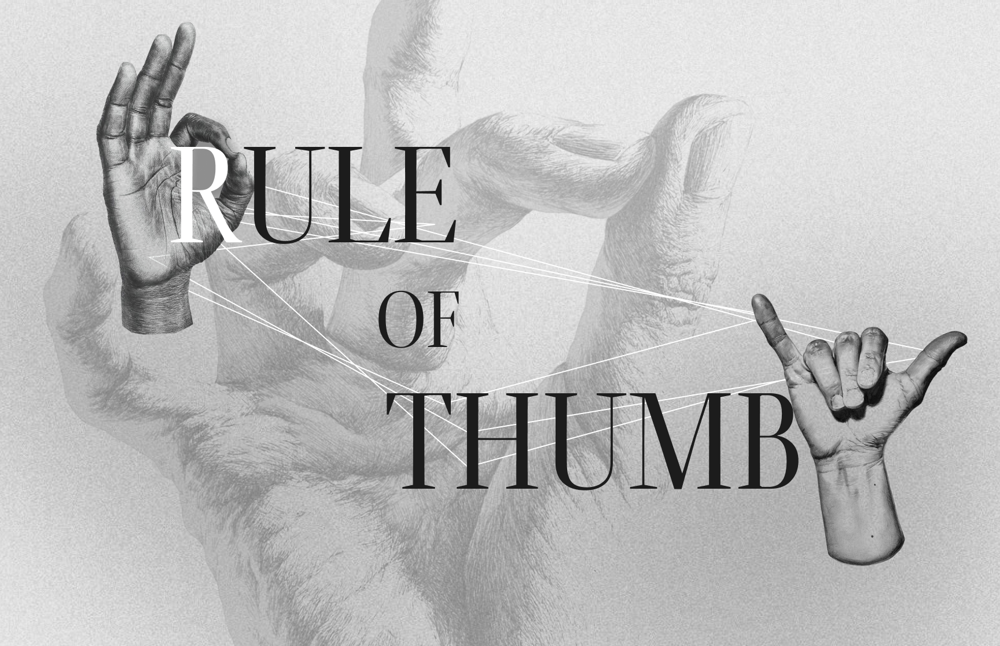
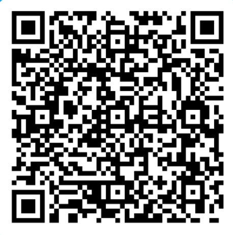

✦ Gesture Detection
Scenario
Detecting

Waiting…
Show one of these gestures:
Gesture not recognized
Redirecting in 5s…
Auto-exploring in 15s
Positive
Neutral
Negative / Insult
✦ GestureWorld
We couldn't clearly detect your gesture.
Make sure your hand is well-lit and fully in the frame. Then show one of the gestures below - the camera will detect it automatically.
Show one of these gestures…
SHOW ONE OF THESE GESTURES:

UNCLASSIFIED INPUT
SYSTEM REQUEST
Meaning: unknown.
Scan to teach me yours.

✦ Gesture Database
Unknown Gesture Records
Database
URL: #database